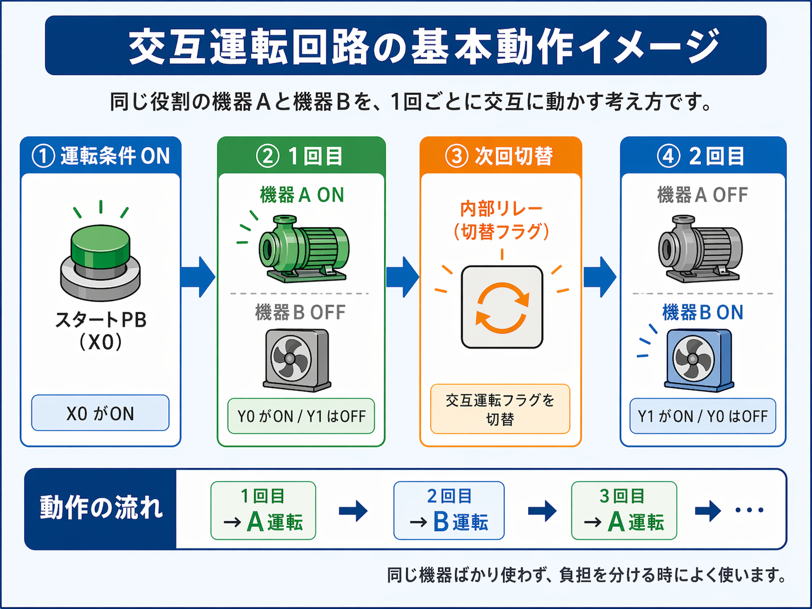
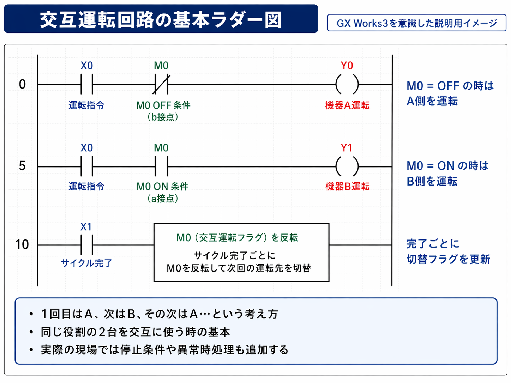

向いている人
- PLCを始めたばかりの人
- 少し実務寄りの回路を知りたい人
- ポンプやファンの2台切替の考え方を知りたい人
- GX Works3で内部リレーの使い方を覚えたい人
交互運転回路は、同じ役割の機器Aと機器Bを1回ごとに交代で動かしたい時に使う基本回路です。 GX Works3を前提に、現場で追いやすい見方で整理しました。

交互運転回路は、AとBを1回ごとに交代で動かすための基本回路です。 前回どちらを動かしたかを覚えておき、次は反対側を動かす考え方で見ると分かりやすいです。
交互運転回路とは、同じ役割の機器Aと機器Bを、1回ごとに交互に動かす回路です。
たとえば現場では、ポンプAとポンプBを交互に使ったり、ファン2台を交互に回したりして、片方だけに負担が偏らないようにしたい時によく使います。
回路の考え方としては、前回どちらを動かしたかを覚えておいて、次は反対側を動かすという見方がいちばん分かりやすいです。
交互運転回路は、同じ役割の機器を偏らず使いたい時に向いています。
片方のポンプばかり動かすと、使用時間に差が出ます。 そのため、A→B→A→Bのように交互に動かして負担を分けます。
排気ファンや送風ファンでも、同じように交互運転の考え方が使えます。 設備っぽい回路としてかなりよく出ます。
同じ役割の2台があるなら、片方を完全固定にするより、交互に使った方が状態の偏りを減らしやすいです。
一番基本のイメージはこれです。
つまり、AとBを切り替えるための記憶を1つ持つような考え方です。
この時によく使うのが、内部リレーです。 たとえば、
というふうに決めておくと、かなり見やすくなります。
GX Works3で見る時は、まず次の3つを見れば分かりやすいです。
スタート信号なのか、自動運転条件なのか、液面や圧力などの条件なのかを見ます。 まず入口条件が分からないと、なぜAかBが動いたのか追いにくくなります。
交互運転では、内部リレーや切替ビットを使うことが多いです。 このフラグがA/Bのどちらを選んでいるかを見るのが大事です。
起動時に切り替えるのか、停止時に切り替えるのか、サイクル完了時に切り替えるのかで回路の意味が変わります。 最初は完了時に反転して次回を切り替えると考えると分かりやすいです。

基本形では、
という流れが分かりやすいです。
たとえば、
として見ると、
という対応になります。
ここで大事なのは、出力の切替そのものと次回のためのフラグ更新を分けて見ることです。
交互運転回路は、自己保持回路と似ているようで役割が違います。
交互運転のつもりでも、条件の組み方が甘いとA/Bが同時に入る形になることがあります。 ここはかなり注意したいところです。
起動のたびに切り替えるのか、完了時に切り替えるのかで意味が変わります。 設備に合わせて考え方を決める必要があります。
基本記事ではシンプルにしていますが、実際の現場では A異常ならB固定、B異常ならA固定、両方異常なら停止、といった条件が追加されることも多いです。
最初はこの形だけ覚えるとかなり楽です。
これが分かると、
にもつながっていきます。
交互運転回路とは、同じ役割の機器Aと機器Bを、1回ごとに交代で動かす基本回路です。
GX Works3で見る時も、
この順で追うと、かなり理解しやすいです。
最初は複雑な異常処理まで入れず、A/Bの切替だけをシンプルに追える基本形から覚えるのがおすすめです。